Opção AEvolução

Power Loop
A assinatura atual redesenhada com proporções mais calmas e terminais consistentes. Preserva reconhecimento; o acionamento continua sendo a leitura dominante.
TONI COIMBRA
TC, acionamento e tecnologia. Os estudos mantêm a paleta atual e testam quanto da assinatura original deve permanecer.

A assinatura atual redesenhada com proporções mais calmas e terminais consistentes. Preserva reconhecimento; o acionamento continua sendo a leitura dominante.
O C permanece como campo aberto e o T ganha leitura imediata. É a solução mais equilibrada entre nome próprio, tecnologia e presença profissional.

Uma construção mais arquitetônica: o C vira percurso e o T conduz o sinal até a saída. Comunica automação e fluxo com personalidade mais técnica.